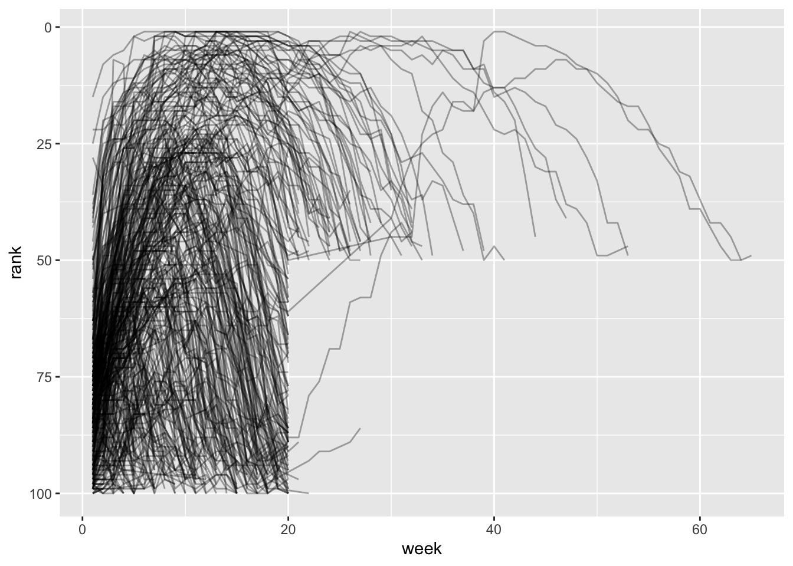

The tidyverse
You are reading the work-in-progress second edition of R for Data Science. This chapter is largely complete and just needs final proof reading. You can find the complete first edition at https://r4ds.had.co.nz.
Introduction
“Happy families are all alike; every unhappy family is unhappy in its own way.”
— Leo Tolstoy
“Tidy datasets are all alike, but every messy dataset is messy in its own way.”
— Hadley Wickham
In this chapter, you will learn a consistent way to organize your data in R using a system called tidy data. Getting your data into this format requires some work up front, but that work pays off in the long term. Once you have tidy data and the tidy tools provided by packages in the tidyverse, you will spend much less time munging data from one representation to another, allowing you to spend more time on the data questions you care about.
In this chapter, you’ll first learn the definition of tidy data and see it applied to simple toy dataset. Then we’ll dive into the main tool you’ll use for tidying data: pivoting. Pivoting allows you to change the form of your data, without changing any of the values. We’ll finish up with a discussion of usefully untidy data, and how you can create it if needed.
Prerequisites
In this chapter we’ll focus on tidyr, a package that provides a bunch of tools to help tidy up your messy datasets. tidyr is a member of the core tidyverse.
From this chapter on, we’ll suppress the loading message from library(tidyverse).
Tidy data
You can represent the same underlying data in multiple ways. The example below shows the same data organised in four different ways. Each dataset shows the same values of four variables: country, year, population, and cases of TB (tuberculosis), but each dataset organizes the values in a different way.
table1
#> # A tibble: 6 × 4
#> country year cases population
#> <chr> <int> <int> <int>
#> 1 Afghanistan 1999 745 19987071
#> 2 Afghanistan 2000 2666 20595360
#> 3 Brazil 1999 37737 172006362
#> 4 Brazil 2000 80488 174504898
#> 5 China 1999 212258 1272915272
#> 6 China 2000 213766 1280428583
table2
#> # A tibble: 12 × 4
#> country year type count
#> <chr> <int> <chr> <int>
#> 1 Afghanistan 1999 cases 745
#> 2 Afghanistan 1999 population 19987071
#> 3 Afghanistan 2000 cases 2666
#> 4 Afghanistan 2000 population 20595360
#> 5 Brazil 1999 cases 37737
#> 6 Brazil 1999 population 172006362
#> # … with 6 more rows
table3
#> # A tibble: 6 × 3
#> country year rate
#> * <chr> <int> <chr>
#> 1 Afghanistan 1999 745/19987071
#> 2 Afghanistan 2000 2666/20595360
#> 3 Brazil 1999 37737/172006362
#> 4 Brazil 2000 80488/174504898
#> 5 China 1999 212258/1272915272
#> 6 China 2000 213766/1280428583
# Spread across two tibbles
table4a # cases
#> # A tibble: 3 × 3
#> country `1999` `2000`
#> * <chr> <int> <int>
#> 1 Afghanistan 745 2666
#> 2 Brazil 37737 80488
#> 3 China 212258 213766
table4b # population
#> # A tibble: 3 × 3
#> country `1999` `2000`
#> * <chr> <int> <int>
#> 1 Afghanistan 19987071 20595360
#> 2 Brazil 172006362 174504898
#> 3 China 1272915272 1280428583These are all representations of the same underlying data, but they are not equally easy to use. One of them, table1, will be much easier to work with inside the tidyverse because it’s tidy.
There are three interrelated rules that make a dataset tidy:
- Each variable is a column; each column is a variable.
- Each observation is row; each row is an observation.
- Each value is a cell; each cell is a single value.
?fig-tidy-structure shows the rules visually.
Why ensure that your data is tidy? There are two main advantages:
There’s a general advantage to picking one consistent way of storing data. If you have a consistent data structure, it’s easier to learn the tools that work with it because they have an underlying uniformity.
There’s a specific advantage to placing variables in columns because it allows R’s vectorised nature to shine. As you learned in ?sec-mutate and ?sec-summarize, most built-in R functions work with vectors of values. That makes transforming tidy data feel particularly natural.
dplyr, ggplot2, and all the other packages in the tidyverse are designed to work with tidy data. Here are a couple of small examples showing how you might work with table1.
# Compute rate per 10,000
table1 |>
mutate(
rate = cases / population * 10000
)
#> # A tibble: 6 × 5
#> country year cases population rate
#> <chr> <int> <int> <int> <dbl>
#> 1 Afghanistan 1999 745 19987071 0.373
#> 2 Afghanistan 2000 2666 20595360 1.29
#> 3 Brazil 1999 37737 172006362 2.19
#> 4 Brazil 2000 80488 174504898 4.61
#> 5 China 1999 212258 1272915272 1.67
#> 6 China 2000 213766 1280428583 1.67
# Compute cases per year
table1 |>
count(year, wt = cases)
#> # A tibble: 2 × 2
#> year n
#> <int> <int>
#> 1 1999 250740
#> 2 2000 296920
# Visualise changes over time
ggplot(table1, aes(year, cases)) +
geom_line(aes(group = country), color = "grey50") +
geom_point(aes(color = country, shape = country)) +
scale_x_continuous(breaks = c(1999, 2000))![This figure shows the numbers of cases in 1999 and 2000 for Afghanistan, Brazil, and China, with year on the x-axis and number of cases on the y-axis. Each point on the plot represents the number of cases in a given country in a given year. The points for each country are differentiated from others by color and shape and connected with a line, resulting in three, non-parallel, non-intersecting lines. The numbers of cases in China are highest for both 1999 and 2000, with values above 200,000 for both years. The number of cases in Brazil is approximately 40,000 in 1999 and approximately 75,000 in 2000. The numbers of cases in Afghanistan are lowest for both 1999 and 2000, with values that appear to be very close to 0 on this scale.](tidyverse_files/figure-html/unnamed-chunk-4-1.png)
Exercises
Using prose, describe how the variables and observations are organised in each of the sample tables.
-
Sketch out the process you’d use to calculate the
ratefortable2andtable4a+table4b. You will need to perform four operations:- Extract the number of TB cases per country per year.
- Extract the matching population per country per year.
- Divide cases by population, and multiply by 10000.
- Store back in the appropriate place.
You haven’t yet learned all the functions you’d need to actually perform these operations, but you should still be able to think through the transformations you’d need.
Recreate the plot showing change in cases over time using
table2instead oftable1. What do you need to do first?
Pivoting
The principles of tidy data might seem so obvious that you wonder if you’ll ever encounter a dataset that isn’t tidy. Unfortunately, however, most real data is untidy. There are two main reasons:
Data is often organised to facilitate some goal other than analysis. For example, it’s common for data to be structured to make data entry, not analysis, easy.
Most people aren’t familiar with the principles of tidy data, and it’s hard to derive them yourself unless you spend a lot of time working with data.
This means that most real analyses will require at least a little tidying. You’ll begin by figuring out what the underlying variables and observations are. Sometimes this is easy; other times you’ll need to consult with the people who originally generated the data. Next, you’ll pivot your data into a tidy form, with variables in the columns and observations in the rows.
tidyr provides two functions for pivoting data: pivot_longer(), which makes datasets longer by increasing rows and reducing columns, and pivot_wider() which makes datasets wider by increasing columns and reducing rows. The following sections work through the use of pivot_longer() and pivot_wider() to tackle a wide range of realistic datasets. These examples are drawn from vignette("pivot", package = "tidyr"), which you should check out if you want to see more variations and more challenging problems.
Let’s dive in.
Data in column names
The billboard dataset records the billboard rank of songs in the year 2000:
billboard
#> # A tibble: 317 × 79
#> artist track date.entered wk1 wk2 wk3 wk4 wk5 wk6 wk7 wk8
#> <chr> <chr> <date> <dbl> <dbl> <dbl> <dbl> <dbl> <dbl> <dbl> <dbl>
#> 1 2 Pac Baby Do… 2000-02-26 87 82 72 77 87 94 99 NA
#> 2 2Ge+her The Har… 2000-09-02 91 87 92 NA NA NA NA NA
#> 3 3 Doors… Krypton… 2000-04-08 81 70 68 67 66 57 54 53
#> 4 3 Doors… Loser 2000-10-21 76 76 72 69 67 65 55 59
#> 5 504 Boyz Wobble … 2000-04-15 57 34 25 17 17 31 36 49
#> 6 98^0 Give Me… 2000-08-19 51 39 34 26 26 19 2 2
#> # … with 311 more rows, and 68 more variables: wk9 <dbl>, wk10 <dbl>,
#> # wk11 <dbl>, wk12 <dbl>, wk13 <dbl>, wk14 <dbl>, wk15 <dbl>, wk16 <dbl>,
#> # wk17 <dbl>, wk18 <dbl>, wk19 <dbl>, wk20 <dbl>, wk21 <dbl>, wk22 <dbl>,
#> # wk23 <dbl>, wk24 <dbl>, wk25 <dbl>, wk26 <dbl>, wk27 <dbl>, wk28 <dbl>,
#> # wk29 <dbl>, wk30 <dbl>, wk31 <dbl>, wk32 <dbl>, wk33 <dbl>, wk34 <dbl>,
#> # wk35 <dbl>, wk36 <dbl>, wk37 <dbl>, wk38 <dbl>, wk39 <dbl>, wk40 <dbl>,
#> # wk41 <dbl>, wk42 <dbl>, wk43 <dbl>, wk44 <dbl>, wk45 <dbl>, wk46 <dbl>, …In this dataset, each observation is a song. The first three columns (artist, track and date.entered) are variables that describe the song. Then we have 76 columns (wk1-wk76) that describe the rank of the song in each week. Here, the column names are one variable (the week) and the cell values are another (the rank).
To tidy this data, we’ll use pivot_longer(). After the data, there are three key arguments:
-
colsspecifies which columns need to be pivoted, i.e. which columns aren’t variables. This argument uses the same syntax asselect()so here we could use!c(artist, track, date.entered)orstarts_with("wk"). -
names_tonames of the variable stored in the column names, here"week". -
values_tonames the variable stored in the cell values, here"rank".
That gives the following call:
billboard |>
pivot_longer(
cols = starts_with("wk"),
names_to = "week",
values_to = "rank"
)
#> # A tibble: 24,092 × 5
#> artist track date.entered week rank
#> <chr> <chr> <date> <chr> <dbl>
#> 1 2 Pac Baby Don't Cry (Keep... 2000-02-26 wk1 87
#> 2 2 Pac Baby Don't Cry (Keep... 2000-02-26 wk2 82
#> 3 2 Pac Baby Don't Cry (Keep... 2000-02-26 wk3 72
#> 4 2 Pac Baby Don't Cry (Keep... 2000-02-26 wk4 77
#> 5 2 Pac Baby Don't Cry (Keep... 2000-02-26 wk5 87
#> 6 2 Pac Baby Don't Cry (Keep... 2000-02-26 wk6 94
#> 7 2 Pac Baby Don't Cry (Keep... 2000-02-26 wk7 99
#> 8 2 Pac Baby Don't Cry (Keep... 2000-02-26 wk8 NA
#> 9 2 Pac Baby Don't Cry (Keep... 2000-02-26 wk9 NA
#> 10 2 Pac Baby Don't Cry (Keep... 2000-02-26 wk10 NA
#> # … with 24,082 more rowsWhat happens if a song is in the top 100 for less than 76 weeks? Take 2 Pac’s “Baby Don’t Cry”, for example. The above output suggests that it was only the top 100 for 7 weeks, and all the remaining weeks are filled in with missing values. These NAs don’t really represent unknown observations; they’re forced to exist by the structure of the dataset1, so we can ask pivot_longer() to get rid of them by setting values_drop_na = TRUE:
billboard |>
pivot_longer(
cols = starts_with("wk"),
names_to = "week",
values_to = "rank",
values_drop_na = TRUE
)
#> # A tibble: 5,307 × 5
#> artist track date.entered week rank
#> <chr> <chr> <date> <chr> <dbl>
#> 1 2 Pac Baby Don't Cry (Keep... 2000-02-26 wk1 87
#> 2 2 Pac Baby Don't Cry (Keep... 2000-02-26 wk2 82
#> 3 2 Pac Baby Don't Cry (Keep... 2000-02-26 wk3 72
#> 4 2 Pac Baby Don't Cry (Keep... 2000-02-26 wk4 77
#> 5 2 Pac Baby Don't Cry (Keep... 2000-02-26 wk5 87
#> 6 2 Pac Baby Don't Cry (Keep... 2000-02-26 wk6 94
#> # … with 5,301 more rowsYou might also wonder what happens if a song is in the top 100 for more than 76 weeks? We can’t tell from this data, but you might guess that additional columns wk77, wk78, … would be added to the dataset.
This data is now tidy, but we could make future computation a bit easier by converting week into a number using mutate() and parse_number(). You’ll learn more about parse_number() and friends in ?sec-data-import.
billboard_tidy <- billboard |>
pivot_longer(
cols = starts_with("wk"),
names_to = "week",
values_to = "rank",
values_drop_na = TRUE
) |>
mutate(
week = parse_number(week)
)
billboard_tidy
#> # A tibble: 5,307 × 5
#> artist track date.entered week rank
#> <chr> <chr> <date> <dbl> <dbl>
#> 1 2 Pac Baby Don't Cry (Keep... 2000-02-26 1 87
#> 2 2 Pac Baby Don't Cry (Keep... 2000-02-26 2 82
#> 3 2 Pac Baby Don't Cry (Keep... 2000-02-26 3 72
#> 4 2 Pac Baby Don't Cry (Keep... 2000-02-26 4 77
#> 5 2 Pac Baby Don't Cry (Keep... 2000-02-26 5 87
#> 6 2 Pac Baby Don't Cry (Keep... 2000-02-26 6 94
#> # … with 5,301 more rowsNow we’re in a good position to look at how song ranks vary over time by drawing a plot. The code is shown below and the result is Figure 1.
billboard_tidy |>
ggplot(aes(week, rank, group = track)) +
geom_line(alpha = 1/3) +
scale_y_reverse()20 and rank is >50." width="576">
How does pivoting work?
Now that you’ve seen what pivoting can do for you, it’s worth taking a little time to gain some intuition about what it does to the data. Let’s start with a very simple dataset to make it easier to see what’s happening:
df <- tribble(
~var, ~col1, ~col2,
"A", 1, 2,
"B", 3, 4,
"C", 5, 6
)Here we’ll say there are three variables: var (already in a variable), name (the column names in the column names), and value (the cell values). So we can tidy it with:
df |>
pivot_longer(
cols = col1:col2,
names_to = "names",
values_to = "values"
)
#> # A tibble: 6 × 3
#> var names values
#> <chr> <chr> <dbl>
#> 1 A col1 1
#> 2 A col2 2
#> 3 B col1 3
#> 4 B col2 4
#> 5 C col1 5
#> 6 C col2 6How does this transformation take place? It’s easier to see if we take it component by component. Columns that are already variables need to be repeated, once for each column in cols, as shown in ?fig-pivot-variables.
The column names become values in a new variable, whose name is given by names_to, as shown in ?fig-pivot-names. They need to be repeated once for each row in the original dataset.
The cell values also become values in a new variable, with a name given by values_to. They are unwound row by row. ?fig-pivot-values illustrates the process.
Many variables in column names
A more challenging situation occurs when you have multiple variables crammed into the column names. For example, take the who2 dataset:
This dataset records information about tuberculosis data collected by the WHO. There are two columns that are already variables and are easy to interpret: country and year. They are followed by 56 columns like sp_m_014, ep_m_4554, and rel_m_3544. If you stare at these columns for long enough, you’ll notice there’s a pattern. Each column name is made up of three pieces separated by _. The first piece, sp/rel/ep, describes the method used for the diagnosis, the second piece, m/f is the gender, and the third piece, 014/1524/2535/3544/4554/65 is the age range.
So in this case we have six variables: two variables are already columns, three variables are contained in the column name, and one variable is in the cell name. This requires two changes to our call to pivot_longer(): names_to gets a vector of column names and names_sep describes how to split the variable name up into pieces:
Of course, tidy data can’t solve every problem so we also showed you some places were you might want to deliberately untidy your data into order to present to humans, feed into statistical models, or just pragmatically get shit done. If you particularly enjoyed this chapter and want to learn more about the underlying theory, you can learn more about the history and theoretical underpinnings in the Tidy Data paper published in the Journal of Statistical Software.
In the next chapter, we’ll pivot back to workflow to discuss the importance of code style, keeping your code “tidy” (ha!) in order to make it easy for you and others to read and understand your code.
We’ll come back to this idea in ?sec-missing-values.↩︎